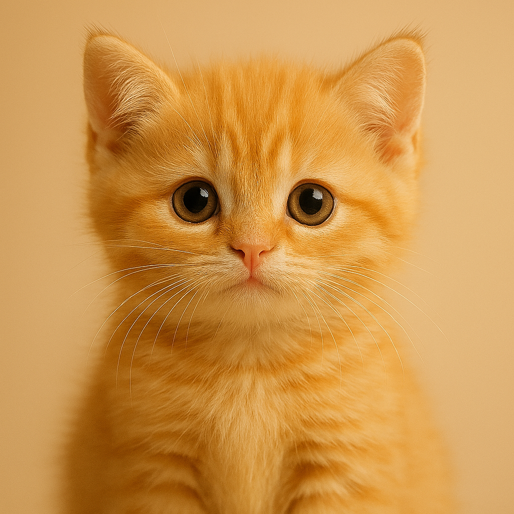

About
My name is Karl Richard T. Miranda, I live here in Manila, Philippines,
I am currently studying MY bachelor of Science in Information Technology , MWA. Here in NU-Manila,
I do play some online/offline games and my other hobbies in my freetime.